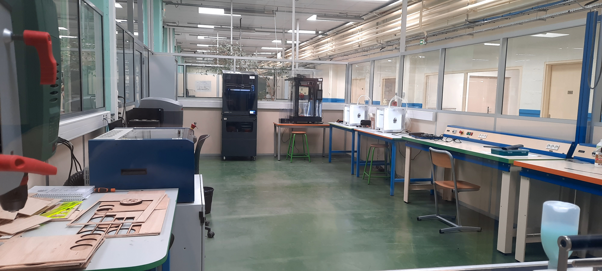

Le Fablab
Le Fablab est un endroit où différentes sortes d'outils sont mis à sa disposition
des élèves et des professeurs du pôle :
- Une découpeuse laser GammaTec,
- 2 imprimantes 3D Ultimaker,
- 1 imprimante 3D Raise3D,
- 1 imprimante 3D Epsilon w50,
- 1 perceuse.
